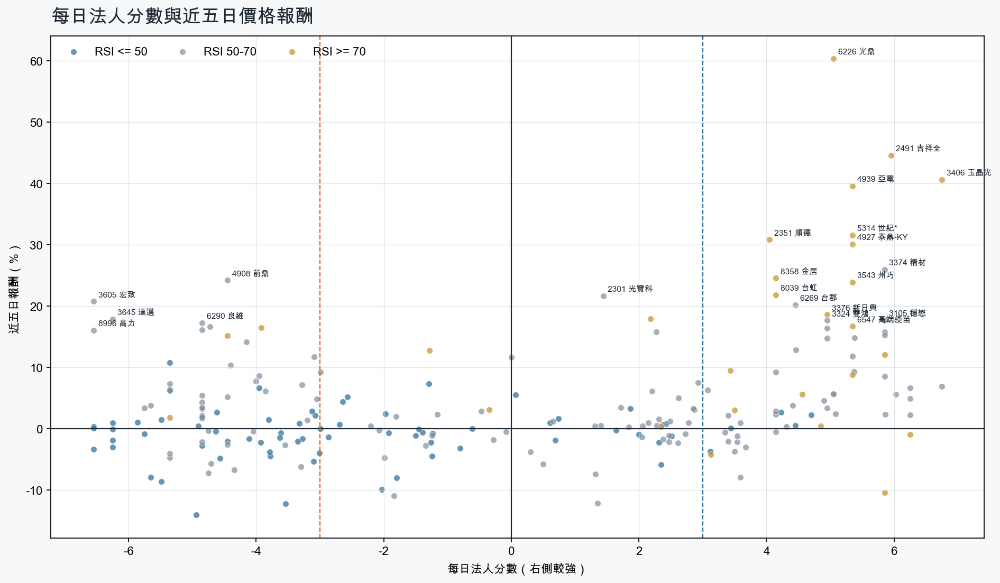
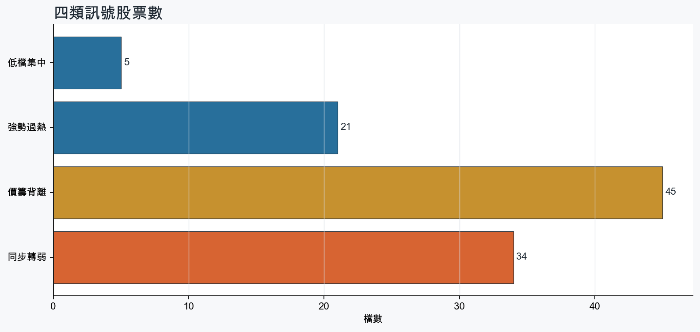
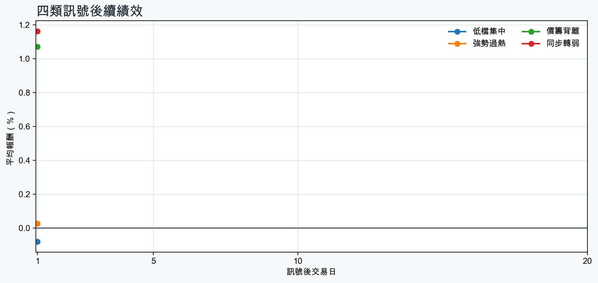

市場情緒偏多
近5日法人合計+2,050,299 張
篩選池上漲比例62.7%
籌碼好 / RSI低5 檔
籌碼差 / 價跌15 檔



01
籌碼好 / RSI低
優先研究基本面；法人續買且價格止穩時，才適合分批觀察。
| 股票 / 建議 | 每日法人分 | RSI / 價格 | 每週集保確認 | 基本面 | 近期消息 |
|---|---|---|---|---|---|
| 6177 達麗優先觀察 | +3.4法人 +2,935 張 / 3 天 | 43.85日 +0.1% | +0.05 pp1000張 +0.56 pp | 單月營收年增 +470.0%；累計營收年增 +637.8%；上半年 EPS 5.03仍需觀察下一期財報延續性來源：公開資訊觀測站 | 近期沒有通過股票語境篩選的新聞 |
| 3712 永崴投控優先觀察 | +4.5法人 +2,889 張 / 3 天 | 46.95日 +0.5% | +0.76 pp1000張 -0.08 pp | 單月營收年增 +79.8%；上半年 EPS 2.11；上半年營益率 8.8%累計營收年增 -25.1%來源：公開資訊觀測站 | 近期沒有通過股票語境篩選的新聞 |
| 2892 第一金優先觀察 | +4.7法人 +98,800 張 / 5 天 | 45.35日 +2.2% | -0.14 pp1000張 -0.14 pp | 單月營收年增 +2.4%；累計營收年增 +18.6%仍需觀察下一期財報延續性來源：公開資訊觀測站 | 金融股漲好兇！兆豐金、元大金、第一金該存誰？法人只推1檔目標價EPS股利全曝光- 上市櫃旺得富理財網 · 08/28配息能力大增。第一金隱含殖利率拚前段班- 新聞MoneyDJ · 08/27 |
| 2886 兆豐金優先觀察 | +4.2法人 +84,730 張 / 5 天 | 38.55日 +2.7% | -0.35 pp1000張 -0.36 pp | 單月營收年增 +4.1%；累計營收年增 +16.7%仍需觀察下一期財報延續性來源：公開資訊觀測站 | 今日最夯股／兆豐金獲利亮眼 股價收紅、外資大買 | 市場焦點 | 證券經濟日報 · 08/28金融股漲好兇！兆豐金、元大金、第一金該存誰？法人只推1檔目標價EPS股利全曝光- 上市櫃旺得富理財網 · 08/28 |
| 2104 國際中橡先等基本面止穩 | +3.1法人 +6,579 張 / 3 天 | 45.55日 -3.8% | +0.20 pp1000張 +0.87 pp | 尚無明確成長訊號單月營收年增 -3.1%；累計營收年增 -15.6%；上半年 EPS -1.32來源：公開資訊觀測站 | 近期沒有通過股票語境篩選的新聞 |
02
籌碼好 / RSI高
趨勢強但不追價，等待量縮、RSI降溫或回測支撐。
| 股票 / 建議 | 每日法人分 | RSI / 價格 | 每週集保確認 | 基本面 | 近期消息 |
|---|---|---|---|---|---|
| 2615 萬海等拉回，不追價 | +5.8法人 +28,436 張 / 4 天 | 71.95日 -10.4% | +3.05 pp1000張 +3.14 pp | 單月營收年增 +50.1%；累計營收年增 +12.8%；上半年 EPS 6.84仍需觀察下一期財報延續性來源：公開資訊觀測站 | 近期沒有通過股票語境篩選的新聞 |
| 1815 富喬等拉回，不追價 | +5.8法人 +72,563 張 / 4 天 | 85.15日 +12.1% | +17.45 pp1000張 +15.88 pp | 單月營收年增 +68.1%；累計營收年增 +46.9%；上半年 EPS 2.24仍需觀察下一期財報延續性來源：公開資訊觀測站 | 【Hot台股】富喬漲逾9%逼近漲停！網嗨「目標300」分析師示警：漲逾8成別急追Yahoo股市 · 08/26 |
| 6108 競國等拉回，不追價 | +6.2法人 +4,838 張 / 5 天 | 75.95日 -1.0% | +3.25 pp1000張 +5.68 pp | 單月營收年增 +63.2%；累計營收年增 +28.7%；上半年 EPS 0.32上半年營益率 -8.0%來源：公開資訊觀測站 | 近期沒有通過股票語境篩選的新聞 |
| 4939 亞電等拉回，不追價 | +5.3法人 +12,774 張 / 4 天 | 86.25日 +39.5% | +5.79 pp1000張 +4.86 pp | 單月營收年增 +36.8%；累計營收年增 +13.1%；上半年 EPS 0.53上半年營益率 7.0%來源：公開資訊觀測站 | 台虹、亞電在紅什麼？ 連3天飆漲停 全靠這「低損耗神級材料」Yahoo新聞 · 08/28 |
| 3406 玉晶光等拉回，不追價 | +6.8法人 +4,976 張 / 5 天 | 88.25日 +40.6% | +5.55 pp1000張 -0.60 pp | 單月營收年增 +1.6%；累計營收年增 +14.2%；上半年 EPS 13.99仍需觀察下一期財報延續性來源：公開資訊觀測站 | 股價破900元創新天價！沾光蘋果新機 玉晶光H2看旺中時新聞網 · 08/29 |
| 1727 中華化等拉回，不追價 | +5.3法人 +4,184 張 / 4 天 | 80.55日 +8.8% | +3.30 pp1000張 +0.60 pp | 單月營收年增 +32.5%；累計營收年增 +21.4%；上半年 EPS 0.66仍需觀察下一期財報延續性來源：公開資訊觀測站 | 長興、中華化...老牌化工股打入半導體？「老化工轉型新科技」能反映到財報上嗎？Smart自學網 · 08/28 |
| 1802 台玻等拉回，不追價 | +4.6法人 +25,499 張 / 4 天 | 70.75日 +5.6% | +0.33 pp1000張 +0.53 pp | 單月營收年增 +28.4%；累計營收年增 +14.2%；上半年 EPS 0.64仍需觀察下一期財報延續性來源：公開資訊觀測站 | 近期沒有通過股票語境篩選的新聞 |
| 6226 光鼎等拉回，不追價 | +5.0法人 +3,470 張 / 4 天 | 83.35日 +60.4% | +4.60 pp1000張 +6.08 pp | 單月營收年增 +21.5%；累計營收年增 +6.4%；上半年 EPS 0.03上半年營益率 -4.1%來源：公開資訊觀測站 | 6226 光鼎- 本週400 張大戶持股增加1-5名 - 股市爆料同學會CMoney · 08/29光鼎轉型功率半導體 股價連日大漲但獲利待驗證理財周刊 · 08/27 |
| 5314 世紀*等拉回，不追價 | +5.3法人 +7,272 張 / 4 天 | 84.35日 +31.5% | +0.88 pp1000張 +0.43 pp | 單月營收年增 +149.6%；累計營收年增 +159.9%；上半年 EPS 0.66仍需觀察下一期財報延續性來源：公開資訊觀測站 | 世紀*(5314)做什麼？世紀連10根漲停，除權填權、無人機題材一次看｜股市話題｜豐雲學堂2026 年 08 月sinotrade.com.tw · 08/27開盤連拉第11根後馬上跌停！世紀*誤坐大怒神 嘎空引爆5.5萬張還券危機Yahoo股市 · 08/28 |
| 8039 台虹等拉回，不追價 | +4.2法人 +6,257 張 / 3 天 | 75.55日 +21.8% | +2.84 pp1000張 +4.87 pp | 累計營收年增 +1.1%；上半年 EPS 1.56單月營收年增 -6.1%；上半年營益率 6.2%來源：公開資訊觀測站 | 台虹自結7月淨利7159萬元、年增近3成 EPS 0.27元非凡新聞台 · 08/29台虹下半年營收動能平穩調價、訂單優化助獲利率改善- 新聞MoneyDJ · 08/28 |
| 2351 順德等拉回，不追價 | +4.0法人 +4,006 張 / 2 天 | 92.35日 +30.9% | +3.93 pp1000張 +3.73 pp | 單月營收年增 +54.0%；累計營收年增 +28.5%；上半年 EPS 2.82仍需觀察下一期財報延續性來源：公開資訊觀測站 | 【順德法說會重點內容備忘錄】未來展望趨勢 20260825富果直送 · 08/25 |
| 1711 永光等拉回，不追價 | +3.4法人 +4,083 張 / 3 天 | 71.65日 +9.5% | +1.80 pp1000張 +1.75 pp | 單月營收年增 +25.7%；累計營收年增 +9.0%；上半年 EPS 0.28上半年營益率 3.5%來源：公開資訊觀測站 | 近期沒有通過股票語境篩選的新聞 |
| 3045 台灣大等拉回，不追價 | +4.8法人 +19,566 張 / 5 天 | 75.05日 +0.4% | -0.07 pp1000張 -0.16 pp | 單月營收年增 +7.1%；累計營收年增 +4.2%；上半年 EPS 2.86仍需觀察下一期財報延續性來源：公開資訊觀測站 | 近期沒有通過股票語境篩選的新聞 |
| 3543 州巧等拉回，不追價 | +5.3法人 +2,800 張 / 4 天 | 83.05日 +23.9% | +4.45 pp1000張 +2.73 pp | 單月營收年增 +10.4%累計營收年增 -1.1%；上半年 EPS -0.54；上半年營益率 -6.2%來源：公開資訊觀測站 | 3543 州巧 - 恭禧賺錢⛑️ - 股市爆料同學會CMoney · 08/28 |
| 3376 新日興等拉回，不追價 | +5.0法人 +7,198 張 / 3 天 | 76.85日 +18.6% | +3.57 pp1000張 +2.54 pp | 上半年 EPS 0.47單月營收年增 -10.3%；累計營收年增 -12.8%；上半年營益率 -1.8%來源：公開資訊觀測站 | 大立光漲停再寫新天價、新日興也勁揚8.2%攀波段高 原來是這個原因UDN · 08/27 |
03
籌碼差 / 股價上漲
可能是事件行情或軋空；沒有籌碼改善前避免追高。
| 股票 / 建議 | 每日法人分 | RSI / 價格 | 每週集保確認 | 基本面 | 近期消息 |
|---|---|---|---|---|---|
| 4908 前鼎背離警戒，避免追高 | -4.5法人 -1,891 張 / 2 天 | 66.15日 +24.2% | -1.70 pp1000張 -2.00 pp | 單月營收年增 +51.6%；累計營收年增 +28.2%；上半年 EPS 1.42仍需觀察下一期財報延續性來源：公開資訊觀測站 | 近期沒有通過股票語境篩選的新聞 |
| 8996 高力背離警戒，避免追高 | -6.5法人 -3,030 張 / 0 天 | 63.05日 +16.1% | -3.35 pp1000張 -6.14 pp | 單月營收年增 +57.6%；累計營收年增 +115.4%；上半年 EPS 8.69仍需觀察下一期財報延續性來源：公開資訊觀測站 | 《台北股市》注意股：28日37檔大立光、高力、穩懋、聯亞、德宏等- 上市櫃旺得富理財網 · 08/28聰明錢都往哪跑？投信連買18檔富世達、高力19買這檔買超近10萬張- 日報工商時報 · 08/29 |
| 3645 達邁背離警戒，避免追高 | -6.2法人 -2,893 張 / 0 天 | 58.15日 +17.8% | -0.78 pp1000張 +1.02 pp | 上半年 EPS 1.52；上半年營益率 21.3%單月營收年增 -32.6%；累計營收年增 -1.5%來源：公開資訊觀測站 | 【11:35 即時新聞】達邁(3645)股價上漲6.6%、來到74.3元，AI與軟板材料題材帶動買盤迴流＋中短期均線有機會重新轉強CMoney投資網誌 · 08/28 |
| 3026 禾伸堂背離警戒，避免追高 | -4.8法人 -2,027 張 / 1 天 | 65.95日 +16.1% | -3.08 pp1000張 -3.67 pp | 單月營收年增 +37.0%；累計營收年增 +18.6%；上半年 EPS 6.73仍需觀察下一期財報延續性來源：公開資訊觀測站 | 焦點股》禾伸堂：雙利多 股價直衝漲停自由財經 · 08/27國巨漲停一天又變臉！華新科、禾伸堂全陪葬「外資目標價1450成誘多？」保守派法人驚吐務實價只剩X88 - 上市櫃旺得富理財網 · 08/16 |
| 3605 宏致背離警戒，避免追高 | -6.5法人 -8,043 張 / 0 天 | 64.15日 +20.7% | +8.95 pp1000張 +10.65 pp | 單月營收年增 +29.8%；累計營收年增 +17.2%；上半年 EPS 1.89上半年營益率 6.4%來源：公開資訊觀測站 | 宏致挑戰外商霸權 搶攻高速傳輸！十年磨一劍，打進AI伺服器供應鏈財訊 · 08/16【即時新聞】宏致受惠AI需求，七月營收創歷史新高，帶動今日股價強勢攻上漲停131元CMoney投資網誌 · 08/28 |
| 5475 德宏背離警戒，避免追高 | -4.5法人 -1,847 張 / 2 天 | 80.45日 +15.2% | -15.54 pp1000張 -15.48 pp | 單月營收年增 +264.0%；累計營收年增 +149.9%；上半年 EPS 1.19仍需觀察下一期財報延續性來源：公開資訊觀測站 | 5475 德宏 - 明天有機會破千 - 股市爆料同學會CMoney · 08/29玻纖布有喜 德宏7月營收年增264％ 漲聲響不停 法人喊一路旺到2027工商時報 · 08/11 |
| 6290 良維背離警戒，避免追高 | -4.8法人 -3,663 張 / 1 天 | 69.35日 +17.3% | +0.73 pp1000張 +1.88 pp | 單月營收年增 +14.4%；累計營收年增 +8.1%；上半年 EPS 4.50仍需觀察下一期財報延續性來源：公開資訊觀測站 | 6290 良維 - 連外資都敢碾壓的買盤真強大😱💪🌋 - 股市爆料同學會CMoney · 08/27 |
| 6147 頎邦背離警戒，避免追高 | -4.7法人 -7,207 張 / 1 天 | 65.75日 +16.6% | -0.55 pp1000張 -0.35 pp | 單月營收年增 +39.2%；累計營收年增 +20.9%；上半年 EPS 1.87仍需觀察下一期財報延續性來源：公開資訊觀測站 | 股價跌6成能重返榮耀？頎邦Q2毛利率大反彈新目標價出爐外資喊買- 日報工商時報 · 08/05焦點股》頎邦：衝破整理區間 亮燈漲停自由財經 · 08/26 |
| 3532 台勝科背離警戒，避免追高 | -3.9法人 -2,206 張 / 1 天 | 82.45日 +16.5% | -0.35 pp1000張 +0.41 pp | 單月營收年增 +28.8%；累計營收年增 +17.6%上半年 EPS -0.05；上半年營益率 -0.1%來源：公開資訊觀測站 | 焦點股》台勝科：漲價潮啟動 強攻漲停自由財經 · 08/24聯電散戶突破百萬人，矽晶圓三雄台勝科攻漲停，當心！散戶瘋狂承接下的風險理財周刊 · 08/29 |
| 3211 順達背離警戒，避免追高 | -4.2法人 -1,311 張 / 2 天 | 57.45日 +14.1% | -0.49 pp1000張 +1.62 pp | 單月營收年增 +20.9%；累計營收年增 +21.7%；上半年 EPS 3.40仍需觀察下一期財報延續性來源：公開資訊觀測站 | 3211 順達 - 台幣強升 將挺進31.5元 台幣升值趨勢不變，對🐢有利 ... - 股市爆料同學會CMoney · 08/28 |
| 6271 同欣電背離警戒，避免追高 | -3.1法人 -1,223 張 / 2 天 | 69.65日 +11.7% | -3.77 pp1000張 -3.83 pp | 單月營收年增 +22.4%；累計營收年增 +4.5%；上半年 EPS 4.37仍需觀察下一期財報延續性來源：公開資訊觀測站 | 6271 同欣電- 6271前波由302跌至142跌幅160，估反彈第一關203 - 股市爆料同學會CMoney · 08/286271 同欣電- cp值最高的cpo - 股市爆料同學會CMoney · 08/25 |
| 6449 鈺邦背離警戒，避免追高 | -5.3法人 -1,834 張 / 1 天 | 48.35日 +10.7% | -2.28 pp1000張 +0.73 pp | 單月營收年增 +34.8%；累計營收年增 +24.2%；上半年 EPS 4.42仍需觀察下一期財報延續性來源：公開資訊觀測站 | 被動元件復活！「指標廠」挾信昌電、鈺邦亮燈漲停 金山電、蜜望實強漲8%Yahoo股市 · 08/27鈺邦看好CAP取代MLCC機會增 到明年上半年擴產約7成news.cnyes.com · 08/26 |
| 6209 今國光背離警戒，避免追高 | -4.4法人 -1,388 張 / 1 天 | 55.45日 +10.4% | -1.72 pp1000張 -2.11 pp | 單月營收年增 +93.2%；累計營收年增 +64.0%；上半年 EPS 1.53仍需觀察下一期財報延續性來源：公開資訊觀測站 | 近期沒有通過股票語境篩選的新聞 |
| 2375 凱美背離警戒，避免追高 | -4.0法人 -2,130 張 / 2 天 | 57.65日 +8.6% | -3.90 pp1000張 -6.46 pp | 單月營收年增 +37.9%；累計營收年增 +12.7%；上半年 EPS 1.85上半年營益率 7.4%來源：公開資訊觀測站 | 凱美下半年訂單明朗 全年AI伺服器電阻出貨估倍增news.cnyes.com · 08/27凱美B/B Ratio達1.2，將啟動擴產計畫- 新聞MoneyDJ · 08/28 |
| 8086 宏捷科背離警戒，避免追高 | -5.3法人 -2,584 張 / 1 天 | 49.35日 +6.3% | -4.68 pp1000張 -6.60 pp | 單月營收年增 +18.4%；累計營收年增 +40.0%；上半年 EPS 2.93仍需觀察下一期財報延續性來源：公開資訊觀測站 | 穩懋、宏捷科、全新...PA三雄搶攻光通訊與低軌衛星的黃金年代-理財彥究院-台股商周財富網 · 08/05宏捷科財報／去年全年 EPS 3.36元 徐秀蘭擔任新董座經濟日報 · 08/26 |
04
籌碼差 / 股價下跌
籌碼與價格同弱，原則上迴避，等待法人與大戶同時回補。
| 股票 / 建議 | 每日法人分 | RSI / 價格 | 每週集保確認 | 基本面 | 近期消息 |
|---|---|---|---|---|---|
| 6176 瑞儀迴避，等待籌碼翻正 | -4.9法人 -2,781 張 / 0 天 | 0.05日 -14.1% | -3.85 pp1000張 -4.16 pp | 上半年 EPS 2.81；上半年營益率 10.1%單月營收年增 -9.5%；累計營收年增 -6.5%來源：公開資訊觀測站 | 6176 瑞儀- 堅持價值投資，存股領息，逢低分批買進。 - 股市爆料同學會CMoney · 08/286176 瑞儀 - 沙到80趕快，別讓我失望 - 股市爆料同學會CMoney · 08/28 |
| 9958 世紀鋼迴避，等待籌碼翻正 | -5.5法人 -2,311 張 / 0 天 | 10.05日 -8.6% | -4.43 pp1000張 -1.49 pp | 單月營收年增 +91.2%；累計營收年增 +36.2%；上半年 EPS 4.08仍需觀察下一期財報延續性來源：公開資訊觀測站 | 世紀鋼 公告本公司申請延長現金增資募集期間CMoney · 08/26 |
| 6919 康霈*迴避，等待籌碼翻正 | -3.5法人 -8,536 張 / 1 天 | 36.95日 -12.2% | +0.13 pp1000張 +0.18 pp | 尚無明確成長訊號單月營收年增 -100.0%；累計營收年增 -82.2%；上半年 EPS -0.21來源：公開資訊觀測站 | 康霈*(6919)新藥CBL-514注射劑樞紐三期臨床試驗CBL-0301向加拿大HC提出試驗變更案已核准執行(8/26股價106元)genetinfo.com · 08/26 |
| 6223 旺矽迴避，等待籌碼翻正 | -5.7法人 -1,347 張 / 1 天 | 30.85日 -8.0% | +0.16 pp1000張 +0.36 pp | 單月營收年增 +66.5%；累計營收年增 +52.3%；上半年 EPS 28.08仍需觀察下一期財報延續性來源：公開資訊觀測站 | 台股獨憔悴！旺矽慘摜跌停 一張賠56萬元ETtoday財經雲 · 08/26旺矽跌停⋯法人喊價失靈？網酸「五折好便宜」：外資出貨失敗UDN · 08/27 |
| 2605 新興迴避，等待籌碼翻正 | -4.8法人 -6,074 張 / 2 天 | 58.75日 -7.3% | -0.49 pp1000張 -1.68 pp | 單月營收年增 +36.3%；累計營收年增 +35.1%；上半年 EPS 3.67仍需觀察下一期財報延續性來源：公開資訊觀測站 | 新興(2605) 今日股價與討論 - 股市爆料同學會CMoney · 08/247月境外基金金流風向變了！科技與日股獲利了結，看懂「多重資產＋新興市場」接棒方程式｜豐雲學堂2026 年 08 月sinotrade.com.tw · 08/27 |
| 6125 廣運迴避，等待籌碼翻正 | -4.3法人 -1,350 張 / 0 天 | 53.05日 -6.8% | -0.71 pp1000張 -1.31 pp | 單月營收年增 +4.0%；累計營收年增 +32.8%；上半年 EPS 0.15上半年營益率 -9.7%來源：公開資訊觀測站 | 近期沒有通過股票語境篩選的新聞 |
| 3036 文曄迴避，等待籌碼翻正 | -4.6法人 -8,947 張 / 0 天 | 15.65日 -4.9% | -1.71 pp1000張 -2.23 pp | 單月營收年增 +94.9%；累計營收年增 +111.0%；上半年 EPS 13.00上半年營益率 2.1%來源：公開資訊觀測站 | Factset 最新調查：文曄(3036-TW)目標價調降至310元，幅度約3.13%｜新聞快訊｜豐雲學堂sinotrade.com.tw · 08/26 |
| 5388 中磊迴避，等待籌碼翻正 | -6.2法人 -4,711 張 / 0 天 | 4.05日 -0.1% | -7.22 pp1000張 -6.17 pp | 單月營收年增 +51.3%；累計營收年增 +56.9%；上半年 EPS 2.59上半年營益率 3.1%來源：公開資訊觀測站 | 中磊法說變法會 股價下跌逾9% | 集中市場 | 證券經濟日報 · 08/12〈中磊法說〉董座直言Q2營收成長是反映記憶體漲價的「虛胖」 毛利率承壓news.cnyes.com · 08/11 |
| 3293 鈊象迴避，等待籌碼翻正 | -6.5法人 -5,333 張 / 0 天 | 25.45日 -3.4% | +0.02 pp1000張 -0.34 pp | 單月營收年增 +25.9%；累計營收年增 +17.1%；上半年 EPS 22.77仍需觀察下一期財報延續性來源：公開資訊觀測站 | 鈊象半年EPS破22元、橘子卻轉虧 遊戲三雄獲利大分流Yahoo新聞 · 08/15鈊象(3293)、聚陽(1477)護城河優勢怎麼看？｜大戶投策略選股｜巴菲特護城河股｜豐雲學堂2026 年 08 月sinotrade.com.tw · 08/24 |
| 4541 晟田迴避，等待籌碼翻正 | -5.3法人 -1,240 張 / 1 天 | 50.25日 -4.8% | +0.72 pp1000張 +0.76 pp | 單月營收年增 +39.2%；累計營收年增 +34.2%；上半年 EPS 1.95仍需觀察下一期財報延續性來源：公開資訊觀測站 | 《上櫃公司現金增資一覽表》欣技、晟田、金山電富聯網 · 08/29晟田啟動半導體大擴產經濟日報 · 08/04 |
| 2915 潤泰全迴避，等待籌碼翻正 | -3.3法人 -2,071 張 / 0 天 | 63.65日 -6.2% | +0.57 pp1000張 +0.78 pp | 上半年 EPS 8.96單月營收年增 -18.5%；累計營收年增 -22.5%；上半年營益率 6.8%來源：公開資訊觀測站 | 《外資賣超31-12》華城(668)、潤泰全(668)、世紀鋼(663)富聯網 · 08/29今日最夯股／潤泰全上半年獲利接近去年全年 股價跳空衝漲停 | 市場焦點 | 證券經濟日報 · 08/14 |
| 2106 建大迴避，等待籌碼翻正 | -3.8法人 -3,647 張 / 0 天 | 25.85日 -4.5% | -0.38 pp1000張 -0.06 pp | 單月營收年增 +28.2%；累計營收年增 +5.6%；上半年 EPS 0.33上半年營益率 3.0%來源：公開資訊觀測站 | 近期沒有通過股票語境篩選的新聞 |
| 9914 美利達迴避，等待籌碼翻正 | -3.1法人 -1,309 張 / 1 天 | 46.35日 -5.4% | +0.25 pp1000張 -1.47 pp | 上半年 EPS 2.15；上半年營益率 8.5%單月營收年增 -1.1%；累計營收年增 -13.2%來源：公開資訊觀測站 | 巨大/美利達營收見回溫，復甦訊號轉強- 新聞MoneyDJ · 08/11注意股：24日28檔萬海、美利達、四維航、一詮等- 上市櫃旺得富理財網 · 08/24 |
| 4566 時碩工業迴避，等待籌碼翻正 | -6.2法人 -2,050 張 / 0 天 | 30.15日 -1.9% | -0.60 pp1000張 +1.11 pp | 單月營收年增 +31.9%；累計營收年增 +16.0%；上半年 EPS 0.99上半年營益率 4.3%來源：公開資訊觀測站 | 時碩工業Q2三率三升，Q3營收可望月月高- 新聞MoneyDJ · 08/11 |
| 9904 寶成迴避，等待籌碼翻正 | -4.5法人 -26,511 張 / 1 天 | 53.35日 -2.6% | -0.84 pp1000張 -1.16 pp | 上半年 EPS 2.37單月營收年增 -0.6%；累計營收年增 -2.6%；上半年營益率 2.3%來源：公開資訊觀測站 | 價值投資寶成（9904）：隱藏在製鞋巨頭底下的資產防禦學CMoney · 08/19【寶成法說會重點內容備忘錄】未來展望趨勢 20260605富果直送 · 06/05 |
BACKTEST
長期規律追蹤
每次訊號後自動補算1、5、10、20個交易日報酬；樣本不足時不做結論。

| 訊號組別 | 1日 | 5日 | 10日 | 20日 |
|---|---|---|---|---|
| 低檔集中 | -0.08%勝率 30% / n=27 | -資料累積中 | -資料累積中 | -資料累積中 |
| 強勢過熱 | +0.03%勝率 37% / n=113 | -資料累積中 | -資料累積中 | -資料累積中 |
| 價籌背離 | +1.07%勝率 55% / n=107 | -資料累積中 | -資料累積中 | -資料累積中 |
| 同步轉弱 | +1.16%勝率 59% / n=201 | -資料累積中 | -資料累積中 | -資料累積中 |
SENTIMENT
市場消息溫度
新聞僅以標題字詞計分，屬情緒代理變數，不代表消息真偽或基本面判定。
- 三大法人買賣超 – 外資買超(2303)聯電、(2330)台積電，投信買超(3017)奇鋐、(1303)南亞，法人合計買超468.18億元 - sinotrade.com.twsinotrade.com.tw
- 三大法人買超468億 台股只漲356點 網疑：有黑手壓著？ - 東森電視東森電視
- TWA00 加權指數 - 《台北股市》外資偏空 投信一刀砍46億元連買白做工 202... - 股市爆料同學會 - CMoneyCMoney
- 台股再上演V轉！逾百萬人笑不出來 「這檔」慘遭外資投信雙殺 - 三立新聞網SETN.com三立新聞網SETN.com
- 投信、外資都在買 台股卻收黑？ 網嘆：沒人要玩了 - Yahoo股市Yahoo股市
- 三大法人買超台股643.07億元 國巨走強卻遭外資、投信聯手調節| 財經焦點 - 太報 TaiSounds太報 TaiSounds
- 南亞科股價觸新高！外資投信「狂掃3萬張」 買賣超前10名出爐 - TVBS新聞網TVBS新聞網
- 【0818台股盤前】外資狂買454億抗投信賣壓 貨櫃三雄與光通訊攜手強攻，「營收亮眼法人買」標的萬潤、聯鈞、致茂 - news.cnyes.comnews.cnyes.com